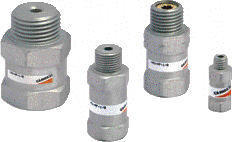

Применение:
- Захват объектов с различной формой и размерами при подключении нескольких присосок к одной системе..

- Значительно уменьшает расход воздуха через присоски, которые не покрывают изделие, что позволяет легко создать универсальную систему для захвата различных деталей.
Описание
- алюминиевый корпус с внутренними медными элементами
- встроенный пылевой фильтр